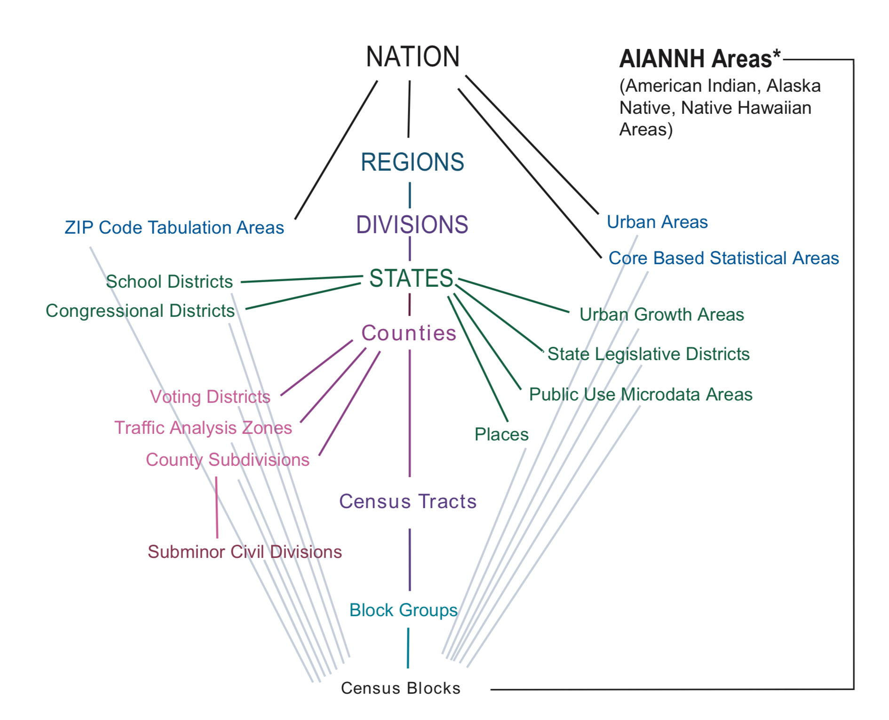
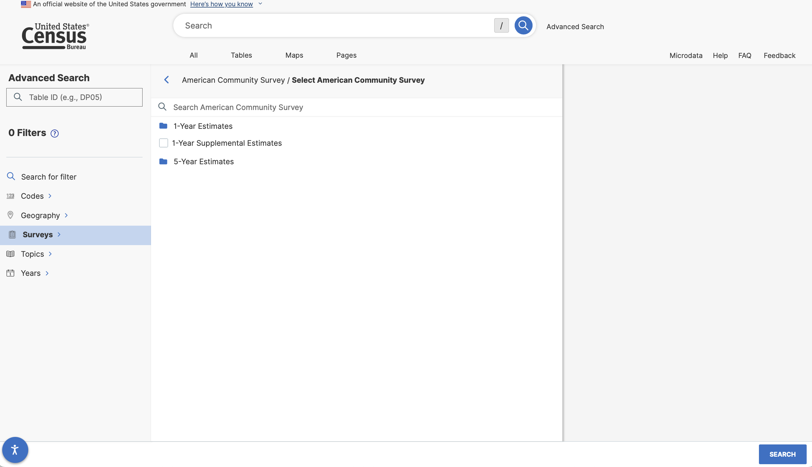
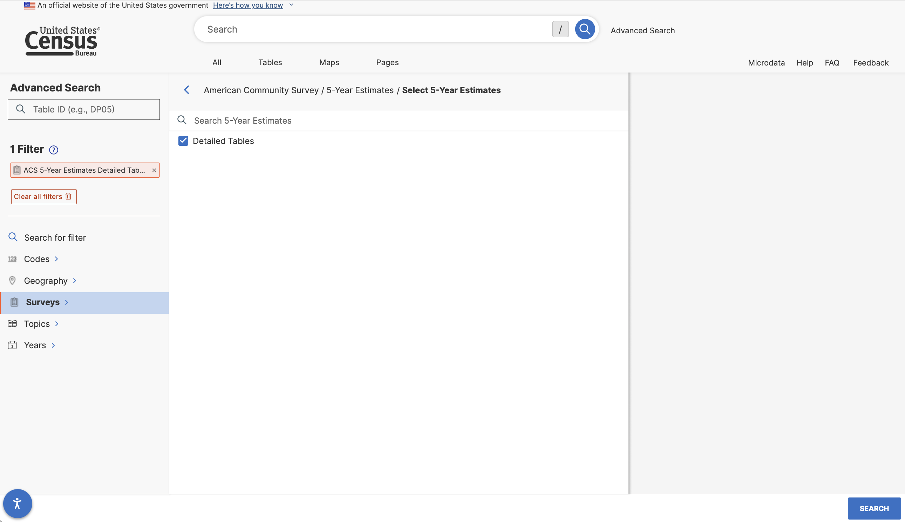
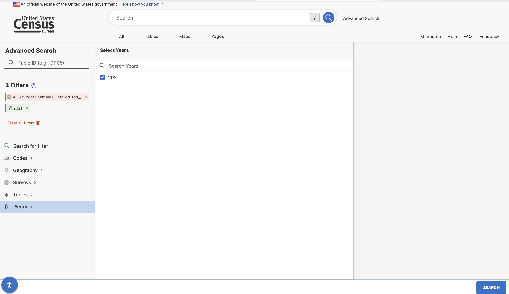
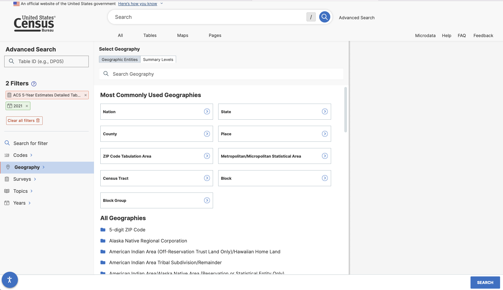
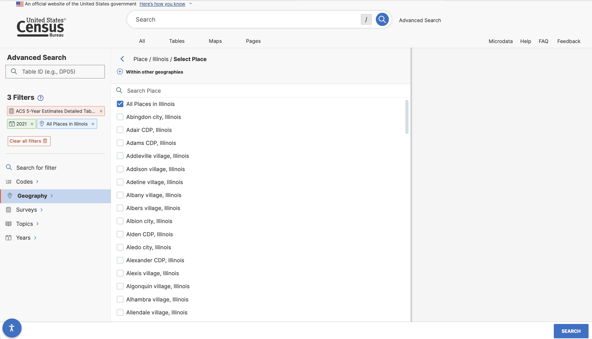
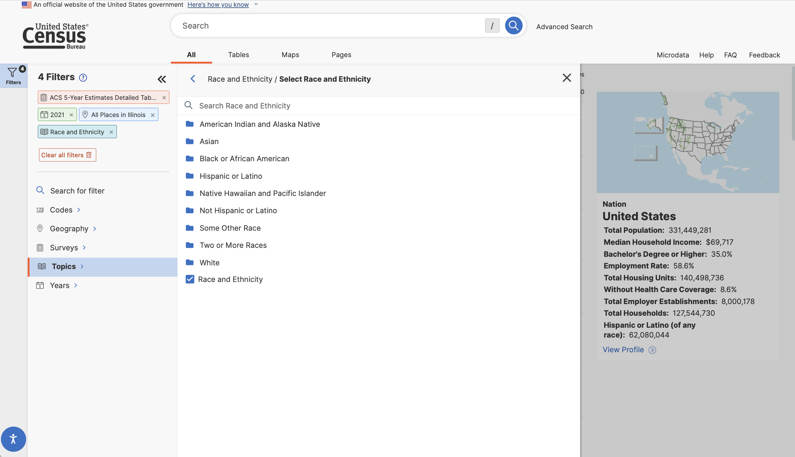
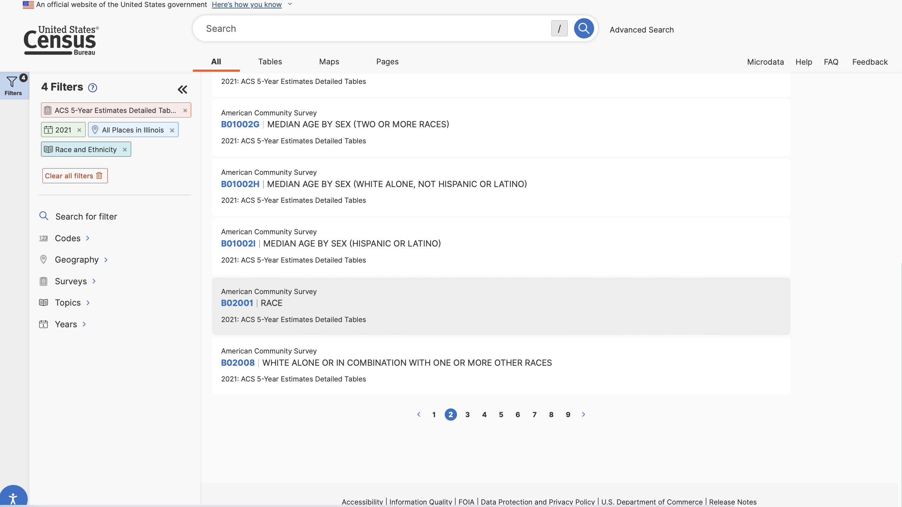
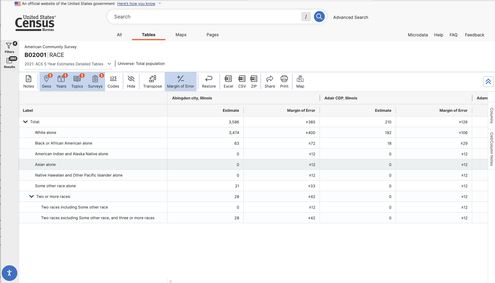

Code
library(gt)
library(tidyverse)
library(tidycensus)This lab is designed to introduce you to some of the basic techniques for downloading data from the U.S. Census Bureau using R. Following elements from the Klosterman, et al. reading, we will replicate some of the tables present in that chapter.
We will also learn a new R package this week - the tidycensus package, which is designed to programmatically download and load census data directly into our R session.
Planners frequently rely upon census data to help establish baseline portraits of places. Given the frequency with which planners tend to use Census data, can R help us to more efficiently access this information, and integrate it into analysis processes?
In this section, we will examine how Census data is typically accessed, and explore how to do so with R. By the end of this section, you will:
tidycensus packageLet’s get going…
If you have not already done so, follow this link to accept the lab Github Classroom assignment repository.
Let’s start working with Census data! Our goal here is to begin creating tables similar to the ones we see in Klosterman Chapter 2. For the purposes of this exercise, we’ll describe how Champaign, Illinois compares to other cities within Champaign County. We’ll then think about how we might be able to describe smaller geographies from there.
Before we get around to downloading census data using R, we’ll start by learning about some of the common ways in which census data are accessed, and will then spend a little time learning how to download data at different summary levels.
Most casual users of Census data typically start by visiting the data.census.gov website:
For those users looking to download detailed demographic tables covering more than one geography, “Use Advanced Search” is best option (and the option that we will choose).
The Advanced Search window includes a series of query selectors, or if you know the exact name or table number you are looking for, you can use the search dialog. Even if you know the table number, it makes sense to start off by selecting your survey and the geography at which you wish FactFinder to return results.
The Census bureau tabulates demographic information for a number of different geographic types, some which are hierarchical, and some which aren’t:
 The Klosterman chapter presents data for a city, and then compares it to its constituent county and region. This diagram tells us that cities (census places) are nested within (and contained by) states, which are nested within census divisions, and census regions which are all contained within the nation. Census places do not have any subgeographies, however, we may also use other sub county geography, especially census tracts and block groups to help us describe the characteristics of census places.
The most common geographies used by planners are as follows:
Some specialized geographies like Traffic Analysis Zones (TAZs) are also frequently used, as are Zip Code Tabulation Areas (ZCTAs) which approximate postal service Zone Improvement Plan (ZIP) codes.
In our FactFinder search, let’s start off by looking for data on the racial composition of census places in Illinois from the 2019 5-Year American Community Survey. This corresponds to data used to create the second column in Table 2.1 of Klosterman. We can add some filters to identify the census data table containing the appropriate data.
Let’s start by filtering to the 5-Year American Community Survey data (Browse Filters -> Surveys -> American Community Survey)

We now have 2 main choices - 1-Year estimates and 5-year estimates. What might the difference be between these two data products?
1-Year Estimates are based off of the survey sample collected within one year and reflect the characteristics of the population within that given year.
5-Year Estimates are based off of a pooled survey sample collected over a 5-year period and reflect the characteristics of the population over those 5 years.
The trade offs between the two samples are time specificity and certainty around the accuracy of the estimates. Particularly when we are looking at smaller geographies, this certainty question can become more of an issue. More on this later in our documentation.
For now, let’s select 5 year estimates, and then select “Detailed Tables”.

After adding this filter, add an additional filter under Years for 2021.

We might also want to add a geographic filter to indicate that the data we want is for census places.
 And then select all places in Illinois…

With these filters in place we can now search for the race table.

We’ll then get a list of tables matching our criteria. There are a lot of them! You will need to click “View All Tables” to see the entire list. Let’s take a closer look at Table B02001: Race. We can click on it to view the table’s contents.
 This is useful - we can see the structure of the table. Rows contain information associated with racial identification groups, columns correspond to census places (cities and local governments). Observations include counts of the population that identify with each racial group.
We could download this file and open it in a spreadsheet program. 
We could download this file and open it in a spreadsheet program or R. If you download the .csv file, we’d need to do some reformatting to start using the data in any serious way.
As we start manipulating the data with more clicks (say to remove the double header row, to delete the GEO.id column, or to work with estimates) we introduce the potential for user error, especially if we want to exactly reproduce what we’ve done over and over again. Of course the potential for error grows once our data takes on more dimensions or involves multiple tables or sources.
As an alternative strategy, let’s look at how we’d do the same thing programmatically in R.
The tidycensus package made by Kyle Walker downloads data directly from the U.S. Census Bureau’s application programming interface (API). While we reviewed using data.census.gov to manually select and download data from the Census, the benefit of using tidycensus and R is that the data pipeline is reproducible.
In order to use tidycensus to download data, you’ll need the following:
There are two main functions in tidycensus:
get_decennial() is designed to download data from the decennial census which is conducted every ten years by law (e.g. 1990, 2000, 2010, and soon 2020) for the purposes of allocating political representation in the US.get_acs() is designed to download data from the American Community Survey, which is conducted continuously, and which focuses on describing the characteristics of the population for the years in between the decennial census.Let’s start by loading a few packages that will help us with our work.
Each time you run a tidycensus function, R constructs a request to the Census API for data. This call needs to include your API key to authenticate your access to the data.The first time you use tidycensus on a new computer or R installation, you’ll need to set up your R environment to load your Census API key. You have two options -
Again, this looks largely the same. The first option simply sets the API key for use in a given rstudio session. Adding install=TRUE “installs” the API key for use any time you load RStudio, meaning you can load and use the package without having to use census_api_key(). I recommend installing your API key for two reasons - first, it is convenient to not have to copy and paste your API key into a new script or notebook; and second, if you share your code publicly, others will not have access to your api key because it is not included in your code (you might include a note in your documentation that lets other users know they will need to supply their own API key).
With that set up, we can move on…
To familiarize yourself with tidycensus, have a look at the following code chunk. This gets the total population by race (Table B02001) for each census place in Illinois, and places that data into place_race_2021:
Our call says create an object names “place_race_2021” and place into it the results of a function called get_acs (which is the function to download ACS data from the census API). Within the get_acs() function, we specify several attributes:
table = we can download specific variables (if we don’t need all of the table’s data using variables =.)year = 2021 and survey = "acs5", we are specifying 2017-2021 5-year ACS data).Let’s have a look at what was just downloaded:
| GEOID | NAME | B02001_001E | B02001_001M | B02001_002E | B02001_002M | B02001_003E | B02001_003M | B02001_004E | B02001_004M | B02001_005E | B02001_005M | B02001_006E | B02001_006M | B02001_007E | B02001_007M | B02001_008E | B02001_008M | B02001_009E | B02001_009M | B02001_010E | B02001_010M |
|---|---|---|---|---|---|---|---|---|---|---|---|---|---|---|---|---|---|---|---|---|---|
| 1700113 | Abingdon city, Illinois | 3586 | 385 | 3474 | 400 | 63 | 72 | 0 | 12 | 0 | 12 | 0 | 12 | 21 | 33 | 28 | 42 | 0 | 12 | 28 | 42 |
| 1700178 | Adair CDP, Illinois | 210 | 126 | 192 | 106 | 18 | 29 | 0 | 12 | 0 | 12 | 0 | 12 | 0 | 12 | 0 | 12 | 0 | 12 | 0 | 12 |
| 1700191 | Adams CDP, Illinois | 47 | 55 | 47 | 55 | 0 | 12 | 0 | 12 | 0 | 12 | 0 | 12 | 0 | 12 | 0 | 12 | 0 | 12 | 0 | 12 |
| 1700230 | Addieville village, Illinois | 359 | 81 | 348 | 83 | 0 | 12 | 0 | 12 | 0 | 12 | 0 | 12 | 0 | 12 | 11 | 11 | 3 | 6 | 8 | 9 |
| 1700243 | Addison village, Illinois | 35999 | 43 | 22423 | 1211 | 1702 | 459 | 223 | 181 | 3022 | 668 | 0 | 25 | 5547 | 884 | 3082 | 891 | 2230 | 734 | 852 | 458 |
| 1700295 | Adeline village, Illinois | 95 | 43 | 94 | 43 | 1 | 2 | 0 | 12 | 0 | 12 | 0 | 12 | 0 | 12 | 0 | 12 | 0 | 12 | 0 | 12 |
| 1700516 | Albany village, Illinois | 771 | 165 | 739 | 157 | 10 | 18 | 0 | 12 | 0 | 12 | 0 | 12 | 3 | 7 | 19 | 20 | 4 | 6 | 15 | 20 |
| 1700555 | Albers village, Illinois | 1431 | 200 | 1387 | 205 | 0 | 12 | 0 | 12 | 6 | 7 | 0 | 12 | 0 | 12 | 38 | 55 | 2 | 6 | 36 | 54 |
| 1700568 | Albion city, Illinois | 2122 | 180 | 2033 | 179 | 0 | 12 | 33 | 32 | 15 | 11 | 0 | 12 | 8 | 12 | 33 | 29 | 0 | 12 | 33 | 29 |
| 1700594 | Alden CDP, Illinois | 188 | 280 | 188 | 280 | 0 | 12 | 0 | 12 | 0 | 12 | 0 | 12 | 0 | 12 | 0 | 12 | 0 | 12 | 0 | 12 |
Examining the place_race_2019 object, we have a table that includes 22 columns:
Note in the above code that we use slice_head() to display only the first 10 rows of a table that actually has 1,466 rows.
That wasn’t so hard! There are several benefits of downloading census data this way: 1. Once we know what tables or variables we are looking for, we don’t have to interact with data.census.gov very much (or at all). 2. R downloads the data and then it is immediately available for analysis as a formatted data frame. 3. We can easily modify existing calls to download data for other geographies.
Let’s say we want to transition to looking at racial identification for counties in Illinois. How would we modify our previous code to match those specifications? - geography needs to be changed from “place” to “county” (find more information on specifying geography in the tidycensus documentation). - We need to add a new specification, state = "IL" (you’ll note that in the documentation on specifying a geography a column called “available by” which tells you what must be specified for a given summary level). - We need to change the object name that we’re putting our downloaded data into. Let’s call in “county_race_2021.
| GEOID | NAME | B02001_001E | B02001_001M | B02001_002E | B02001_002M | B02001_003E | B02001_003M | B02001_004E | B02001_004M | B02001_005E | B02001_005M | B02001_006E | B02001_006M | B02001_007E | B02001_007M | B02001_008E | B02001_008M | B02001_009E | B02001_009M | B02001_010E | B02001_010M |
|---|---|---|---|---|---|---|---|---|---|---|---|---|---|---|---|---|---|---|---|---|---|
| 17001 | Adams County, Illinois | 65878 | NA | 60689 | 144 | 2615 | 343 | 51 | 33 | 420 | 113 | 8 | 11 | 153 | 61 | 1942 | 382 | 513 | 191 | 1429 | 283 |
| 17003 | Alexander County, Illinois | 5488 | NA | 3502 | 39 | 1836 | 70 | 4 | 9 | 1 | 3 | 22 | 32 | 0 | 17 | 123 | 58 | 15 | 18 | 108 | 53 |
| 17005 | Bond County, Illinois | 16804 | NA | 15120 | 135 | 1184 | 141 | 112 | 44 | 165 | 155 | 0 | 19 | 36 | 25 | 187 | 114 | 88 | 71 | 99 | 86 |
| 17007 | Boone County, Illinois | 53592 | NA | 44895 | 968 | 1437 | 293 | 160 | 137 | 523 | 87 | 0 | 28 | 4200 | 1041 | 2377 | 515 | 1243 | 394 | 1134 | 321 |
| 17009 | Brown County, Illinois | 6330 | NA | 4876 | 202 | 1174 | 170 | 39 | 33 | 3 | 5 | 0 | 17 | 135 | 70 | 103 | 58 | 59 | 46 | 44 | 37 |
| 17011 | Bureau County, Illinois | 33338 | NA | 30452 | 237 | 189 | 66 | 66 | 29 | 298 | 51 | 0 | 25 | 1307 | 256 | 1026 | 172 | 564 | 146 | 462 | 77 |
| 17013 | Calhoun County, Illinois | 4537 | NA | 4357 | 45 | 29 | 35 | 14 | 18 | 2 | 4 | 0 | 12 | 0 | 12 | 135 | 52 | 61 | 49 | 74 | 29 |
| 17015 | Carroll County, Illinois | 15586 | NA | 14248 | 276 | 468 | 128 | 44 | 22 | 119 | 73 | 0 | 19 | 79 | 50 | 628 | 240 | 223 | 117 | 405 | 212 |
| 17017 | Cass County, Illinois | 13058 | NA | 11075 | 281 | 451 | 150 | 108 | 112 | 89 | 25 | 91 | 135 | 545 | 251 | 699 | 253 | 523 | 240 | 176 | 75 |
| 17019 | Champaign County, Illinois | 206583 | NA | 144522 | 757 | 26996 | 1074 | 170 | 82 | 22204 | 477 | 115 | 98 | 2280 | 513 | 10296 | 1300 | 3005 | 571 | 7291 | 1166 |
By making those few changes, you’ll note that the newly downloaded data in county_race_2021 now includes names of counties in the NAME column, instead of places as in our first call. There are data for each of the 102 counties in Illinois.
Pretty cool, huh?
Let’s start by downloading data on population by racial identification for counties in Illinois from the 2021 5-year American Community Survey, and placing the data into a data frame called “place_race_2021”. To do so, we need to know some basic information to construct our data request to the census.
Since we are downloading ACS data, we will use the get_acs() function. At a minimum, get_acs() needs to know the geography we want it to download, the name(s) of the variables we’d like to retrieve, and the year we want the data for. Check out the basic usage of tidycensus for more information on constructing calls for different geographies.
tidycensus can make calls for most geographies programmatically.
So far, we have used table = to specify that we wanted all variables downloaded for each table. In some cases, we may not need all of that information. Instead, we can use the variables = specification to download specific columns from the larger census table.
Table B02001 which we’ve been looking at is hierarchical. The first row contains the total population of all races. The second row contains the estimate for those individuals who identify as white alone. The eighth row contains the estimate for individuals of two or more races.
Table 2.1 in the Klosterman book presents racial identification for White Alone, Black Alone, Other, and Hispanic ethnicity. Putting aside for a minute the Hispanic ethnicity statistic, how would we download and construct analogous data for Champaign, Illinois? Let’s think this through:
| Indicator | Row Number | Tidycensus Variable | Constructed Variable |
|---|---|---|---|
| White Alone | 2 | B02001_002 | NA |
| Black Alone | 3 | B02001_003 | NA |
| Other | ? | NA | B02001_001-(B02001_002+B02001_003) |
To construct this table, we only need the variables corresponding to the first, second, and third rows.
White alone and black alone are the second and third rows in the data.census.gov table.
We can construct our “Other” variable by subtracting from the total population, the number of white alone and black alone individuals.
Let’s see this in practice:
| GEOID | NAME | B02001_001E | B02001_001M | B02001_002E | B02001_002M | B02001_003E | B02001_003M |
|---|---|---|---|---|---|---|---|
| 1700113 | Abingdon city, Illinois | 3586 | 385 | 3474 | 400 | 63 | 72 |
| 1700178 | Adair CDP, Illinois | 210 | 126 | 192 | 106 | 18 | 29 |
| 1700191 | Adams CDP, Illinois | 47 | 55 | 47 | 55 | 0 | 12 |
| 1700230 | Addieville village, Illinois | 359 | 81 | 348 | 83 | 0 | 12 |
| 1700243 | Addison village, Illinois | 35999 | 43 | 22423 | 1211 | 1702 | 459 |
| 1700295 | Adeline village, Illinois | 95 | 43 | 94 | 43 | 1 | 2 |
| 1700516 | Albany village, Illinois | 771 | 165 | 739 | 157 | 10 | 18 |
| 1700555 | Albers village, Illinois | 1431 | 200 | 1387 | 205 | 0 | 12 |
| 1700568 | Albion city, Illinois | 2122 | 180 | 2033 | 179 | 0 | 12 |
| 1700594 | Alden CDP, Illinois | 188 | 280 | 188 | 280 | 0 | 12 |
Note that our original place_race_2021 data frame had 22 variables. The one we downloaded with our updated call only has 8 variables. What’s going on in variables = c("B02001_001", "B02001_002", "B02001_003")? The table is B02001, but then we also specify the specific row in the census data table, which actually gets represented as a column when downloaded here.
B02001_001 contains the total population estimate
B02001_002 contains the white alone population
B02001_003 contains the total black alone population
We could use the tidyverse command mutate() to create our other category and place into a new column in our dataset:
| GEOID | NAME | B02001_001E | B02001_001M | B02001_002E | B02001_002M | B02001_003E | B02001_003M | p_other |
|---|---|---|---|---|---|---|---|---|
| 1700113 | Abingdon city, Illinois | 3586 | 385 | 3474 | 400 | 63 | 72 | 49 |
| 1700178 | Adair CDP, Illinois | 210 | 126 | 192 | 106 | 18 | 29 | 0 |
| 1700191 | Adams CDP, Illinois | 47 | 55 | 47 | 55 | 0 | 12 | 0 |
| 1700230 | Addieville village, Illinois | 359 | 81 | 348 | 83 | 0 | 12 | 11 |
| 1700243 | Addison village, Illinois | 35999 | 43 | 22423 | 1211 | 1702 | 459 | 11874 |
| 1700295 | Adeline village, Illinois | 95 | 43 | 94 | 43 | 1 | 2 | 0 |
| 1700516 | Albany village, Illinois | 771 | 165 | 739 | 157 | 10 | 18 | 22 |
| 1700555 | Albers village, Illinois | 1431 | 200 | 1387 | 205 | 0 | 12 | 44 |
| 1700568 | Albion city, Illinois | 2122 | 180 | 2033 | 179 | 0 | 12 | 89 |
| 1700594 | Alden CDP, Illinois | 188 | 280 | 188 | 280 | 0 | 12 | 0 |
We might also want to rename our other two variables so that they are more readable, and might want to get rid of some of the other data we don’t need:
| Name | pop_tot | pop_white | pop_black | pop_other |
|---|---|---|---|---|
| Abingdon city, Illinois | 3586 | 3474 | 63 | 49 |
| Adair CDP, Illinois | 210 | 192 | 18 | 0 |
| Adams CDP, Illinois | 47 | 47 | 0 | 0 |
| Addieville village, Illinois | 359 | 348 | 0 | 11 |
| Addison village, Illinois | 35999 | 22423 | 1702 | 11874 |
| Adeline village, Illinois | 95 | 94 | 1 | 0 |
| Albany village, Illinois | 771 | 739 | 10 | 22 |
| Albers village, Illinois | 1431 | 1387 | 0 | 44 |
| Albion city, Illinois | 2122 | 2033 | 0 | 89 |
| Alden CDP, Illinois | 188 | 188 | 0 | 0 |
The above code does the following:
mutate() to create a new variable called pop_other that subtracts from the total population the white alone population and black alone population.rename() which allows us to rename columns by name with the specification rename(new name = old name)select() to select only the name of the place, and our four named population columns - pop_total, pop_white, pop_black, pop_other.Let’s filter out just the data for Champaign, Illinois:
| Name | pop_tot | pop_white | pop_black | pop_other |
|---|---|---|---|---|
| Champaign city, Illinois | 88343 | 54115 | 15741 | 18487 |
Note that if you look at the Name column that the name for each census place includes some additional information regarding what type of place it is (e.g. city, village, CDP). How would we filter for a place like Champaign if we didn’t know it was incorporated as a city?
Some possible strategies:
arrange() command allows us to sort:| GEOID | NAME | B02001_001E | B02001_001M | B02001_002E | B02001_002M | B02001_003E | B02001_003M |
|---|---|---|---|---|---|---|---|
| 1700113 | Abingdon city, Illinois | 3586 | 385 | 3474 | 400 | 63 | 72 |
| 1700178 | Adair CDP, Illinois | 210 | 126 | 192 | 106 | 18 | 29 |
| 1700191 | Adams CDP, Illinois | 47 | 55 | 47 | 55 | 0 | 12 |
| 1700230 | Addieville village, Illinois | 359 | 81 | 348 | 83 | 0 | 12 |
| 1700243 | Addison village, Illinois | 35999 | 43 | 22423 | 1211 | 1702 | 459 |
| 1700295 | Adeline village, Illinois | 95 | 43 | 94 | 43 | 1 | 2 |
| 1700516 | Albany village, Illinois | 771 | 165 | 739 | 157 | 10 | 18 |
| 1700555 | Albers village, Illinois | 1431 | 200 | 1387 | 205 | 0 | 12 |
| 1700568 | Albion city, Illinois | 2122 | 180 | 2033 | 179 | 0 | 12 |
| 1700594 | Alden CDP, Illinois | 188 | 280 | 188 | 280 | 0 | 12 |
| 1700646 | Aledo city, Illinois | 3860 | 84 | 3685 | 105 | 69 | 36 |
| 1700659 | Alexander CDP, Illinois | 263 | 134 | 257 | 134 | 0 | 12 |
| 1700672 | Alexis village, Illinois | 735 | 166 | 693 | 160 | 0 | 12 |
| 1700685 | Algonquin village, Illinois | 29869 | 55 | 24997 | 659 | 789 | 362 |
| 1700737 | Alhambra village, Illinois | 627 | 154 | 609 | 151 | 0 | 12 |
| 1700815 | Allendale village, Illinois | 709 | 156 | 633 | 143 | 0 | 12 |
| 1700867 | Allenville village, Illinois | 111 | 59 | 111 | 59 | 0 | 12 |
| 1700880 | Allerton village, Illinois | 226 | 56 | 197 | 50 | 19 | 23 |
| 1700919 | Alma village, Illinois | 304 | 77 | 299 | 76 | 0 | 12 |
| 1700958 | Alorton village, Illinois | 1864 | 388 | 33 | 44 | 1806 | 388 |
If we wanted to sort this list in the opposite direction, we can use the desc() command to do so:
| GEOID | NAME | B02001_001E | B02001_001M | B02001_002E | B02001_002M | B02001_003E | B02001_003M |
|---|---|---|---|---|---|---|---|
| 1784220 | Zion city, Illinois | 24660 | 74 | 12130 | 1175 | 6447 | 768 |
| 1784155 | Zeigler city, Illinois | 1563 | 200 | 1512 | 194 | 7 | 12 |
| 1784038 | Yorkville city, Illinois | 20503 | 638 | 16005 | 1706 | 2367 | 1259 |
| 1783817 | Yates City village, Illinois | 711 | 154 | 683 | 154 | 5 | 7 |
| 1783765 | Yale village, Illinois | 84 | 41 | 76 | 39 | 0 | 12 |
| 1783739 | Xenia village, Illinois | 337 | 97 | 317 | 95 | 0 | 12 |
| 1783687 | Wyoming city, Illinois | 1428 | 192 | 1360 | 187 | 18 | 18 |
| 1783622 | Wyanet village, Illinois | 1015 | 172 | 969 | 173 | 2 | 5 |
| 1783518 | Worth village, Illinois | 10909 | 38 | 8807 | 702 | 275 | 139 |
| 1783505 | Worden village, Illinois | 800 | 173 | 762 | 169 | 0 | 12 |
| 1783349 | Woodstock city, Illinois | 25829 | 345 | 21197 | 1104 | 558 | 258 |
| 1783336 | Woodson village, Illinois | 570 | 157 | 554 | 154 | 0 | 12 |
| 1783245 | Woodridge village, Illinois | 34161 | 131 | 22766 | 976 | 4097 | 980 |
| 1783206 | Woodlawn village, Illinois | 647 | 126 | 597 | 119 | 7 | 9 |
| 1783102 | Woodland village, Illinois | 286 | 115 | 263 | 100 | 5 | 14 |
| 1783063 | Woodhull village, Illinois | 782 | 147 | 768 | 145 | 5 | 8 |
| 1783271 | Wood River city, Illinois | 10325 | 28 | 9324 | 401 | 499 | 306 |
| 1782985 | Wood Dale city, Illinois | 14034 | 24 | 10351 | 912 | 326 | 247 |
| 1782855 | Wonder Lake village, Illinois | 4032 | 403 | 3381 | 651 | 0 | 12 |
| 1782725 | Witt city, Illinois | 638 | 164 | 629 | 155 | 4 | 24 |
stringr package called str_detect():| GEOID | NAME | B02001_001E | B02001_001M | B02001_002E | B02001_002M | B02001_003E | B02001_003M |
|---|---|---|---|---|---|---|---|
| 1712385 | Champaign city, Illinois | 88343 | 45 | 54115 | 1105 | 15741 | 1104 |
This says, look in the NAME column, and find those values where part of the row matches “Champaign”.
Let’s look again at our cleaned up observations for Champaign:
| Name | pop_tot | pop_white | pop_black | pop_other |
|---|---|---|---|---|
| Champaign city, Illinois | 88343 | 54115 | 15741 | 18487 |
There’s a fairly sizable population that falls into the “pop_other” category. We could not worry about this, but it probably makes sense to see if there’s another relatively large population group that we should itemize for in Champaign. Let’s go back and download the whole table (and overwrite our existing one) to be able to take a closer look:
| GEOID | NAME | B02001_001E | B02001_001M | B02001_002E | B02001_002M | B02001_003E | B02001_003M | B02001_004E | B02001_004M | B02001_005E | B02001_005M | B02001_006E | B02001_006M | B02001_007E | B02001_007M | B02001_008E | B02001_008M | B02001_009E | B02001_009M | B02001_010E | B02001_010M |
|---|---|---|---|---|---|---|---|---|---|---|---|---|---|---|---|---|---|---|---|---|---|
| 1712385 | Champaign city, Illinois | 88343 | 45 | 54115 | 1105 | 15741 | 1104 | 30 | 29 | 13310 | 750 | 24 | 36 | 1375 | 464 | 3748 | 777 | 950 | 266 | 2798 | 684 |
There’s a fairly sizable number of people in B02001_005E (13,310). What racial group is represented there? Given that large a number, let’s add this group into the racial summary table we’re working to develop:
place_race_2021 |>
filter(NAME == "Champaign city, Illinois") |>
mutate(pop_other = B02001_001E-(B02001_002E + B02001_003E+ B02001_005E)) |>
rename(Name = NAME, pop_tot = B02001_001E, pop_white = B02001_002E, pop_black = B02001_003E, pop_asian = B02001_005E) |>
select(Name, pop_tot, pop_white, pop_black, pop_asian, pop_other) |>
gt()| Name | pop_tot | pop_white | pop_black | pop_asian | pop_other |
|---|---|---|---|---|---|
| Champaign city, Illinois | 88343 | 54115 | 15741 | 13310 | 5177 |
The missing group with a fairly large population in this case is the Asian population. By adding this group, we lower the proportion of the total population in the “other” category substantially. This now looks a bit more presentable (and informative). There’s no hard and fast rule for which groups to represent. However, it’s important to note that it is often beneficial to make use of an “other” category in instances where you have small numbers (unless there’s detail there which your audience needs to see).
Let’s go ahead and write this cleaned information back into place_race_2021:
place_race_2021<-place_race_2021 |>
filter(NAME == "Champaign city, Illinois") |>
mutate(pop_other = B02001_001E-(B02001_002E + B02001_003E+ B02001_005E)) |>
rename(Name = NAME, pop_tot = B02001_001E, pop_white = B02001_002E, pop_black = B02001_003E, pop_asian = B02001_005E) |>
select(Name, pop_tot, pop_white, pop_black, pop_asian, pop_other)
place_race_2021 |> gt()| Name | pop_tot | pop_white | pop_black | pop_asian | pop_other |
|---|---|---|---|---|---|
| Champaign city, Illinois | 88343 | 54115 | 15741 | 13310 | 5177 |
From here, we could do a few more things:
Perform the same table cleaning and re-labeling for our county data that you did for our data for Champaign, and overwrite the existing data with this new data.
county_race_2021 <-get_acs(geography = "county", state = "IL", table = "B02001", year=2021, survey="acs5", output="wide") |>
filter(NAME == "Champaign County, Illinois") |>
mutate(pop_other = B02001_001E-(B02001_002E + B02001_003E+ B02001_005E)) |>
rename(Name = NAME, pop_tot = B02001_001E, pop_white = B02001_002E, pop_black = B02001_003E, pop_asian = B02001_005E) |>
select(Name, pop_tot, pop_white, pop_black, pop_asian, pop_other)
county_race_2021 |> gt()| Name | pop_tot | pop_white | pop_black | pop_asian | pop_other |
|---|---|---|---|---|---|
| Champaign County, Illinois | 206583 | 144522 | 26996 | 22204 | 12861 |
Now that we have “clean” data for City of Champaign and Champaign County, calculate percentages of the total population for each racial category and add these as new columns in their respective data tables:
place_race_2021<-
place_race_2021 |>
mutate(p_white = (pop_white/pop_tot)*100,
p_black = (pop_black/pop_tot)*100,
p_asian = (pop_asian / pop_tot)*100,
p_other = (pop_other/pop_tot)*100)
county_race_2021<-
county_race_2021 %>%
mutate(p_white = (pop_white/pop_tot)*100,
p_black = (pop_black/pop_tot)*100,
p_asian = (pop_asian / pop_tot)*100,
p_other = (pop_other/pop_tot)*100)From here, we could copy and paste out values to construct a final table, or could combine values to create our own table:
| Name | pop_tot | pop_white | pop_black | pop_asian | pop_other | p_white | p_black | p_asian | p_other |
|---|---|---|---|---|---|---|---|---|---|
| Champaign city, Illinois | 88343 | 54115 | 15741 | 13310 | 5177 | 61.25556 | 17.81805 | 15.06628 | 5.860113 |
| Champaign County, Illinois | 206583 | 144522 | 26996 | 22204 | 12861 | 69.95832 | 13.06787 | 10.74822 | 6.225585 |
The bind_rows() command allows us to take the rows in two separate data tables and combine them together based upon them having common column names (the columns don’t have to be in the same order). There’s also bind_columns() for the analogous operation on columns.
This puts us in a good position to make a final “pretty” table:
First, for raw numbers:
| Name | White | Black | Asian | Other | Total Population |
|---|---|---|---|---|---|
| Champaign city, Illinois | 54,115 | 15,741 | 13,310 | 5,177 | 88,343 |
| Champaign County, Illinois | 144,522 | 26,996 | 22,204 | 12,861 | 206,583 |
Second, for percentages:
| Name | White | Black | Asian | Other |
|---|---|---|---|---|
| Champaign city, Illinois | 61.3% | 17.8% | 15.1% | 5.9% |
| Champaign County, Illinois | 70.0% | 13.1% | 10.7% | 6.2% |
The Klosterman book includes one more comparison - for the region. Champaign’s region includes Champaign, Ford, and Piatt Counties. We can construct regional numbers from the same county data which we used before. Unfortunately, we overwrote that existing data when we created our “clean” data just for Champaign County. Let’s download this again and construct our regional comparison:
region_race_2021<- get_acs(geography = "county", state = "IL", table = "B02001", year=2021, survey="acs5", output="wide") |>
filter(NAME %in% c("Champaign County, Illinois", "Ford County, Illinois", "Piatt County, Illinois")) |> summarise(B02001_001E = sum(B02001_001E),
B02001_002E = sum(B02001_002E),
B02001_003E = sum(B02001_003E),
B02001_005E = sum(B02001_005E)) |>
mutate(NAME = "Region") |>
mutate(pop_other = B02001_001E-(B02001_002E + B02001_003E+ B02001_005E)) |>
rename(Name = NAME, pop_tot = B02001_001E, pop_white = B02001_002E, pop_black = B02001_003E, pop_asian = B02001_005E) |>
select(Name, pop_tot, pop_white, pop_black, pop_asian, pop_other) |>
mutate(
p_white = (pop_white / pop_tot)*100,
p_black = (pop_black / pop_tot)*100,
p_asian = (pop_asian / pop_tot)*100,
p_other = (pop_other / pop_tot)*100)Note that the above code uses pipes to take all of the steps we had done above - downloading the data, querying out the counties of interest (remember that %in% allows us to match on multiple elements of a list), calculating values, to put them into one step. We now have a data processing pipeline which we only need to make minor modifications to in order to create a summary for any census geography. If you are sure that you have robust code present here, this will work just fine. It is perfectly acceptable to break this code into multiple chunks and then to overwrite once you are certain that the code will give you a desired outcome.
Also, did you catch how we combined information for Champaign, Ford, and Piatt counties into one “Region”? The following lines of code handle these steps:
What’s going on here?
The filter() section filters the data to the three rows in the dataset where the NAME field is equal to Champaign, Ford, or Piatt county.
The summarise() section is a little different than what we’ve seen before. In the past we’ve used this with group_by() in order to develop summaries for groups. Because we don’t have a group_by() clause here, R, summarizes all of the observations as one group. In this case, because we’re dealing with count data, we simply sum up all of the observations in a summary table where I have named the columns with the same names as the raw data had.
From there, we can re-use the code we had already created to process the place and county data. With these things done, we can add our region values into our race_2021 summary table:
| Name | pop_tot | pop_white | pop_black | pop_asian | pop_other | p_white | p_black | p_asian | p_other |
|---|---|---|---|---|---|---|---|---|---|
| Champaign city, Illinois | 88343 | 54115 | 15741 | 13310 | 5177 | 61.25556 | 17.81805 | 15.066276 | 5.860113 |
| Champaign County, Illinois | 206583 | 144522 | 26996 | 22204 | 12861 | 69.95832 | 13.06787 | 10.748222 | 6.225585 |
| Region | 236836 | 173216 | 27219 | 22294 | 14107 | 73.13753 | 11.49276 | 9.413265 | 5.956442 |
While the values here are transposed, we have created code which creates a table similar to table 2.1 in the Klosterman book.
This tutorial has walked you through the steps necessary to start making basic calls to the Census API via tidycensus. There’s a lot more that you can do with tidycensus that we didn’t cover here, including accessing decennial census data, downloading census geometries along with data, and having tidycensus do some reshaping of your data. We will continue to explore these features as we add complexity in future labs.
In evaluating your lab submission, we’ll be paying attention to the following:
Use of dplyr and tidyverse style formatting in your coding.
Refined table output formatting using tools such as gt.
As you get into the lab, please feel welcome to ask us questions, and please share where you’re struggling with us and with others in the class.
---
title: "Population and the Census"
sidebar: false
toc: true
toc-depth: 4
page-layout: full
bibliography: ../references.bib
csl: ../apa-6th-edition.csl
format:
html:
code-fold: show
code-overflow: wrap
code-tools:
source: true
toggle: false
caption: none
fig-responsive: true
editor: visual
---
## Introduction
This lab is designed to introduce you to some of the basic techniques for downloading data from the U.S. Census Bureau using R. Following elements from the Klosterman, et al. reading, we will replicate some of the tables present in that chapter.
We will also learn a new R package this week - the `tidycensus` package, which is designed to programmatically download and load census data directly into our R session.
## Goals
Planners frequently rely upon census data to help establish baseline portraits of places. Given the frequency with which planners tend to use Census data, can R help us to more efficiently access this information, and integrate it into analysis processes?
In this section, we will examine how Census data is typically accessed, and explore how to do so with R. By the end of this section, you will:
- Review how to manually access census data from [data.census.gov](data.census.gov).
- Learn how to construct basic calls for census data using R and the `tidycensus` package
- Learn the basic principles of joining data, and apply these
## Core Concepts
### R and Rstudio
- bind_rows()
- bind_cols()
- get_acs()
- %in% c()
Let's get going...
## Github Lab Repository
If you have not already done so, follow [this link](https://classroom.github.com/a/-wEwOEtR) to accept the lab Github Classroom assignment repository.
## Accessing Census Data via American Fact Finder
Let's start working with Census data! Our goal here is to begin creating tables similar to the ones we see in Klosterman Chapter 2. For the purposes of this exercise, we'll describe how Champaign, Illinois compares to other cities within Champaign County. We'll then think about how we might be able to describe smaller geographies from there.
Before we get around to downloading census data using R, we'll start by learning about some of the common ways in which census data are accessed, and will then spend a little time learning how to download data at different *summary levels*.
Most casual users of Census data typically start by visiting the [data.census.gov](https://data.census.gov) website:
```{=html}
<iframe width="780" height="500" src="https://data.census.gov" title="data.census.gov"></iframe>
```
For those users looking to download detailed demographic tables covering more than one geography, "Use Advanced Search" is best option (and the option that we will choose).
The Advanced Search window includes a series of query selectors, or if you know the exact name or table number you are looking for, you can use the search dialog. Even if you know the table number, it makes sense to start off by selecting your survey and the geography at which you wish FactFinder to return results.
The Census bureau tabulates demographic information for a [number of different geographic types](https://www2.census.gov/geo/pdfs/reference/geodiagram.pdf), some which are hierarchical, and some which aren't:
 The Klosterman chapter presents data for a city, and then compares it to its constituent county and region. This diagram tells us that cities (census places) are nested within (and contained by) states, which are nested within census divisions, and census regions which are all contained within the nation. Census places do not have any subgeographies, however, we may also use other sub county geography, especially census tracts and block groups to help us describe the characteristics of census places.
The most common geographies used by planners are as follows:
- State
- County
- Place (incorporated cities)
- Tract (approximate neighborhoods based upon physical boundaries)
Some specialized geographies like Traffic Analysis Zones (TAZs) are also frequently used, as are Zip Code Tabulation Areas (ZCTAs) which approximate postal service Zone Improvement Plan (ZIP) codes.
In our FactFinder search, let's start off by looking for data on the racial composition of census places in Illinois from the 2019 5-Year American Community Survey. This corresponds to data used to create the second column in Table 2.1 of Klosterman. We can add some filters to identify the census data table containing the appropriate data.
Let's start by filtering to the 5-Year American Community Survey data (Browse Filters -\> Surveys -\> American Community Survey)

We now have 2 main choices - 1-Year estimates and 5-year estimates. What might the difference be between these two data products?
- **1-Year Estimates** are based off of the survey sample collected within one year and reflect the characteristics of the population within that given year.
- **5-Year Estimates** are based off of a *pooled* survey sample collected over a 5-year period and reflect the characteristics of the population over those 5 years.
The trade offs between the two samples are time specificity and certainty around the accuracy of the estimates. Particularly when we are looking at smaller geographies, this certainty question can become more of an issue. More on this later in our documentation.
For now, let's select 5 year estimates, and then select "Detailed Tables".

After adding this filter, add an additional filter under Years for 2021.

We might also want to add a geographic filter to indicate that the data we want is for census places.
 And then select all places in Illinois...

With these filters in place we can now search for the race table.

We'll then get a list of tables matching our criteria. There are a lot of them! You will need to click "View All Tables" to see the entire list. Let's take a closer look at Table B02001: Race. We can click on it to view the table's contents.
 This is useful - we can see the structure of the table. *Rows* contain information associated with racial identification groups, *columns* correspond to census places (cities and local governments). Observations include counts of the population that identify with each racial group.
We could download this file and open it in a spreadsheet program. 
We could download this file and open it in a spreadsheet program or R. If you download the .csv file, we'd need to do some reformatting to start using the data in any serious way.
As we start manipulating the data with more clicks (say to remove the double header row, to delete the GEO.id column, or to work with estimates) we introduce the potential for user error, especially if we want to exactly reproduce what we've done over and over again. Of course the potential for error grows once our data takes on more dimensions or involves multiple tables or sources.
As an alternative strategy, let's look at how we'd do the same thing programmatically in R.
## Workflow: Downloading Census Data Programmatically in R
The `tidycensus` package made by [Kyle Walker](https://walkerke.github.io/tidycensus/) downloads data directly from the U.S. Census Bureau's application programming interface (API). While we reviewed using [data.census.gov](https://data.census.gov) to manually select and download data from the Census, the benefit of using `tidycensus` and R is that the data pipeline is *reproducible*.
In order to use `tidycensus` to download data, you'll need the following:
- A Census API key (if you don't already have one, please [request one from the census bureau](https://api.census.gov/data/key_signup.html))
- A desired geography to look up (for example, all census places in Illinois)
- The census year you want data for (we'll start with 2021)
- The survey you'd like to use (Decennial Census, ACS 1 or 5 year data)
- The number of the table we want to look up (in this case table B02001 which contains information on the total population by race from the American Community Survey)
There are two main functions in `tidycensus`:
- `get_decennial()` is designed to download data from the decennial census which is conducted every ten years by law (e.g. 1990, 2000, 2010, and soon 2020) for the purposes of allocating political representation in the US.
- `get_acs()` is designed to download data from the American Community Survey, which is conducted continuously, and which focuses on describing the characteristics of the population for the years in between the decennial census.
### Initial Set Up
Let's start by loading a few packages that will help us with our work.
```{r}
#| message: false
#| warning: false
library(gt)
library(tidyverse)
library(tidycensus)
```
Each time you run a `tidycensus` function, R constructs a request to the Census API for data. This call needs to include your API key to authenticate your access to the data.The first time you use `tidycensus` on a new computer or R installation, you'll need to set up your R environment to load your Census API key. You have two options -
1. Manually set the API key for use in your R script each time you use tidycensus:
```{r}
#| eval: false
library(tidycensus)
census_api_key("936c96236b979ae522c6cf67edb51923dd391fb3")
```
2. Store your API key locally on your computer so that it does not need to be loaded manually.
```{r}
#| eval: false
library(tidycensus)
census_api_key("936c96236b979ae522c6cf67edb51923dd391fb3", install = TRUE)
```
Again, this looks largely the same. The first option simply sets the API key for use in a given rstudio session. Adding `install=TRUE` "installs" the API key for use any time you load RStudio, meaning you can load and use the package without having to use `census_api_key()`. I recommend installing your API key for two reasons - first, it is convenient to not have to copy and paste your API key into a new script or notebook; and second, if you share your code publicly, others will not have access to your api key because it is not included in your code (you might include a note in your documentation that lets other users know they will need to supply their own API key).
With that set up, we can move on...
### Our First Table Download
To familiarize yourself with tidycensus, have a look at the following code chunk. This gets the total population by race (Table B02001) for each census place in Illinois, and places that data into place_race_2021:
```{r}
#| error: false
#| message: false
place_race_2021<-get_acs(geography = "place", state = "Illinois", table = "B02001", year=2021, survey="acs5", output="wide")
```
Our call says create an object names "place_race_2021" and place into it the results of a function called `get_acs` (which is the function to download ACS data from the census API). Within the `get_acs()` function, we specify several attributes:
- *geography = "place"* allows us to specify the geography which we want returned - in this case estimates for census places.
- *state = "Illinois"* allows us to specify that we want to download data for the state of Illinois.
- *table = "B02001"* allows us to specify which table we want downloaded - in this case, we want to look in table B02001. As an alternate to using `table =` we can download specific variables (if we don't need all of the table's data using `variables =`.)
- *year = 2021* allows us to specify which vintage of ACS data we are downloading.
- *survey="acs5"* specifies that we want to look at 5-year ACS data with year being the most recent endpoint (e.g. if we specify `year = 2021` and `survey = "acs5"`, we are specifying 2017-2021 5-year ACS data).
- *output="wide"* specifies that we want our data to be formatted with columns corresponding to different racial identification categories.
Let's have a look at what was just downloaded:
```{r}
place_race_2021 |>
slice_head(n = 10) |>
gt()
```
Examining the place_race_2019 object, we have a table that includes 22 columns:
- **GEOID** a unique numeric code for each census place
- **NAME** the name of each census place
- **Estimates** estimates (in this case population estimates by race), with each column representing a *row* in the data table we pulled up on [data.census.gov](https://data.census.gov/cedsci/table?g=0400000US17.160000&d=ACS%205-Year%20Estimates%20Detailed%20Tables&tid=ACSDT5Y2017.B02001&y=2017&t=Race%20and%20Ethnicity&vintage=2017&hidePreview=true&cid=B01001A_001E).
- **Margin of Error** the margin of error associated with each estimate.
Note in the above code that we use `slice_head()` to display only the first 10 rows of a table that actually has 1,466 rows.
That wasn't *so* hard! There are several benefits of downloading census data this way: 1. Once we know what tables or variables we are looking for, we don't have to interact with data.census.gov very much (or at all). 2. R downloads the data and then it is immediately available for analysis as a formatted data frame. 3. We can easily modify existing calls to download data for other geographies.
Let's say we want to transition to looking at racial identification for counties in Illinois. How would we modify our previous code to match those specifications? - `geography` needs to be changed from "place" to "county" (find more information on specifying geography in the [tidycensus documentation](https://walkerke.github.io/tidycensus/articles/basic-usage.html#geography-in-tidycensus)). - We need to add a new specification, `state = "IL"` (you'll note that in the documentation on specifying a geography a column called "available by" which tells you what must be specified for a given summary level). - We need to change the object name that we're putting our downloaded data into. Let's call in "county_race_2021.
```{r}
#| error: false
#| message: false
county_race_2021<-get_acs(geography = "county", state = "IL", table = "B02001", year=2021, survey="acs5", output="wide")
county_race_2021 |>
slice_head(n = 10) |>
gt()
```
By making those few changes, you'll note that the newly downloaded data in county_race_2021 now includes names of counties in the `NAME` column, instead of places as in our first call. There are data for each of the 102 counties in Illinois.
Pretty cool, huh?
### Building Table 2.1: Population Breakdown by Race
Let's start by downloading data on population by racial identification for counties in Illinois from the 2021 5-year American Community Survey, and placing the data into a data frame called "place_race_2021". To do so, we need to know some basic information to construct our data request to the census.
Since we are downloading ACS data, we will use the `get_acs()` function. At a minimum, `get_acs()` needs to know the geography we want it to download, the name(s) of the variables we'd like to retrieve, and the year we want the data for. Check out the [basic usage of tidycensus](https://walkerke.github.io/tidycensus/articles/basic-usage.html) for more information on constructing calls for different geographies.
`tidycensus` can make calls for [most geographies](https://walkerke.github.io/tidycensus/articles/basic-usage.html#geography-in-tidycensus) programmatically.
So far, we have used `table =` to specify that we wanted all variables downloaded for each table. In some cases, we may not need all of that information. Instead, we can use the `variables =` specification to download specific columns from the larger census table.
Table B02001 which we've been looking at is *hierarchical*. The first *row* contains the total population of all races. The second row contains the estimate for those individuals who identify as white alone. The eighth row contains the estimate for individuals of two or more races.
Table 2.1 in the Klosterman book presents racial identification for White Alone, Black Alone, Other, and Hispanic ethnicity. Putting aside for a minute the Hispanic ethnicity statistic, how would we download and construct analogous data for Champaign, Illinois? Let's think this through:
| Indicator | Row Number | Tidycensus Variable | Constructed Variable |
|---------------|---------------|---------------|----------------------------|
| White Alone | 2 | B02001_002 | NA |
| Black Alone | 3 | B02001_003 | NA |
| Other | ? | NA | B02001_001-(B02001_002+B02001_003) |
To construct this table, we only need the variables corresponding to the first, second, and third rows.
- White alone and black alone are the second and third rows in the data.census.gov table.
- We can construct our "Other" variable by subtracting from the total population, the number of white alone and black alone individuals.
Let's see this in practice:
```{r}
#| error: false
#| message: false
place_race_2021<-get_acs(geography = "place", state = "IL", variables = c("B02001_001", "B02001_002", "B02001_003"), year=2021, survey="acs5", output="wide")
place_race_2021 |>
slice_head(n = 10) |>
gt()
```
Note that our original place_race_2021 data frame had 22 variables. The one we downloaded with our updated call only has 8 variables. What's going on in `variables = c("B02001_001", "B02001_002", "B02001_003")`? The table is B02001, but then we also specify the *specific row* in the census data table, which actually gets represented as a column when downloaded here.
- B02001_001 contains the total population estimate
- B02001_002 contains the white alone population
- B02001_003 contains the total black alone population
We could use the `tidyverse` command `mutate()` to create our other category and place into a new column in our dataset:
```{r}
place_race_2021 |>
mutate(p_other = B02001_001E-(B02001_002E + B02001_003E)) |>
slice_head(n = 10) |>
gt()
```
We might also want to rename our other two variables so that they are more readable, and might want to get rid of some of the other data we don't need:
```{r}
place_race_2021 |>
mutate(pop_other = B02001_001E-(B02001_002E + B02001_003E)) |>
rename(Name = NAME, pop_tot = B02001_001E, pop_white = B02001_002E, pop_black = B02001_003E) |>
select(Name, pop_tot, pop_white, pop_black, pop_other) |>
slice_head(n = 10) |>
gt()
```
The above code does the following:
- Uses `mutate()` to create a new variable called `pop_other` that subtracts from the total population the white alone population and black alone population.
- Pipes this through to a function which you haven't seen before called `rename()` which allows us to rename columns by name with the specification `rename(new name = old name)`
- We then pipe this through and use `select()` to select only the name of the place, and our four named population columns - pop_total, pop_white, pop_black, pop_other.
Let's filter out just the data for Champaign, Illinois:
```{r}
place_race_2021 |>
filter(NAME == "Champaign city, Illinois") |>
mutate(pop_other = B02001_001E-(B02001_002E + B02001_003E)) |>
rename(Name = NAME, pop_tot = B02001_001E, pop_white = B02001_002E, pop_black = B02001_003E) |>
select(Name, pop_tot, pop_white, pop_black, pop_other) |>
gt()
```
Note that if you look at the Name column that the name for each census place includes some additional information regarding what type of place it is (e.g. city, village, CDP). How would we filter for a place like Champaign if we didn't know it was incorporated as a city?
Some possible strategies:
1. We could search through all 1,369 records to find the specific record for Champaign
2. We could search manually but first sort alphabetically by NAME which would make it a little easier to find the value for Champaign. The `arrange()` command allows us to sort:
```{r}
place_race_2021 |>
arrange(NAME) |>
slice_head(n = 20) |>
gt()
```
If we wanted to sort this list in the opposite direction, we can use the `desc()` command to do so:
```{r}
place_race_2021 |>
arrange(desc(NAME)) |>
slice_head(n = 20) |>
gt()
```
3. We could call upon a flexible tool for identifying matches within a character vector from the `stringr` package called `str_detect()`:
```{r}
place_race_2021 |>
filter(str_detect(NAME, "Champaign")) |>
gt()
```
This says, look in the NAME column, and find those values where **part** of the row matches "Champaign".
Let's look again at our cleaned up observations for Champaign:
```{r}
place_race_2021 |>
filter(NAME == "Champaign city, Illinois") |>
mutate(pop_other = B02001_001E-(B02001_002E + B02001_003E)) |>
rename(Name = NAME, pop_tot = B02001_001E, pop_white = B02001_002E, pop_black = B02001_003E) |>
select(Name, pop_tot, pop_white, pop_black, pop_other) |>
gt()
```
There's a fairly sizable population that falls into the "pop_other" category. We could not worry about this, but it probably makes sense to see if there's another relatively large population group that we should itemize for in Champaign. Let's go back and download the whole table (and overwrite our existing one) to be able to take a closer look:
```{r}
#| error: false
#| warning: false
place_race_2021<-get_acs(geography = "place", state = "IL", table = "B02001", year=2021, survey="acs5", output="wide")
place_race_2021 |>
filter(NAME == "Champaign city, Illinois") |>
gt()
```
- Total Population 88,343 (B02001_001E)
- White Population 54,115 (B02001_002E)
- Black Population 15,741 (B02001_003E)
There's a fairly sizable number of people in B02001_005E (13,310). What racial group is represented there? Given that large a number, let's add this group into the racial summary table we're working to develop:
```{r}
place_race_2021 |>
filter(NAME == "Champaign city, Illinois") |>
mutate(pop_other = B02001_001E-(B02001_002E + B02001_003E+ B02001_005E)) |>
rename(Name = NAME, pop_tot = B02001_001E, pop_white = B02001_002E, pop_black = B02001_003E, pop_asian = B02001_005E) |>
select(Name, pop_tot, pop_white, pop_black, pop_asian, pop_other) |>
gt()
```
The missing group with a fairly large population in this case is the Asian population. By adding this group, we lower the proportion of the total population in the "other" category substantially. This now looks a bit more presentable (and informative). There's no hard and fast rule for which groups to represent. However, it's important to note that it is often beneficial to make use of an "other" category in instances where you have small numbers (unless there's detail there which your audience needs to see).
Let's go ahead and write this cleaned information back into place_race_2021:
```{r}
place_race_2021<-place_race_2021 |>
filter(NAME == "Champaign city, Illinois") |>
mutate(pop_other = B02001_001E-(B02001_002E + B02001_003E+ B02001_005E)) |>
rename(Name = NAME, pop_tot = B02001_001E, pop_white = B02001_002E, pop_black = B02001_003E, pop_asian = B02001_005E) |>
select(Name, pop_tot, pop_white, pop_black, pop_asian, pop_other)
place_race_2021 |> gt()
```
From here, we could do a few more things:
1. Construct an analogous table from our county data for Champaign County, Illinois.
2. Construct percentages for the values we've found, which can make comparison much easier.
### Construct County Data
Perform the same table cleaning and re-labeling for our county data that you did for our data for Champaign, and overwrite the existing data with this new data.
```{r}
#| error: false
#| warning: false
county_race_2021 <-get_acs(geography = "county", state = "IL", table = "B02001", year=2021, survey="acs5", output="wide") |>
filter(NAME == "Champaign County, Illinois") |>
mutate(pop_other = B02001_001E-(B02001_002E + B02001_003E+ B02001_005E)) |>
rename(Name = NAME, pop_tot = B02001_001E, pop_white = B02001_002E, pop_black = B02001_003E, pop_asian = B02001_005E) |>
select(Name, pop_tot, pop_white, pop_black, pop_asian, pop_other)
county_race_2021 |> gt()
```
### Construct Percentages
Now that we have "clean" data for City of Champaign and Champaign County, calculate percentages of the total population for each racial category and add these as new columns in their respective data tables:
```{r}
place_race_2021<-
place_race_2021 |>
mutate(p_white = (pop_white/pop_tot)*100,
p_black = (pop_black/pop_tot)*100,
p_asian = (pop_asian / pop_tot)*100,
p_other = (pop_other/pop_tot)*100)
county_race_2021<-
county_race_2021 %>%
mutate(p_white = (pop_white/pop_tot)*100,
p_black = (pop_black/pop_tot)*100,
p_asian = (pop_asian / pop_tot)*100,
p_other = (pop_other/pop_tot)*100)
```
From here, we could copy and paste out values to construct a final table, or could combine values to create our own table:
```{r}
race_2021<-bind_rows(place_race_2021, county_race_2021)
race_2021 |> gt()
```
The `bind_rows()` command allows us to take the rows in two separate data tables and combine them together based upon them having common column names (the columns don't have to be in the same order). There's also `bind_columns()` for the analogous operation on columns.
This puts us in a good position to make a final "pretty" table:
First, for raw numbers:
```{r}
race_2021 |>
select(Name, pop_white, pop_black, pop_asian, pop_other, pop_tot) |>
gt() |>
fmt_number(2:6, decimals = 0) |>
cols_label(
pop_white = "White",
pop_black = "Black",
pop_asian = "Asian",
pop_other = "Other",
pop_tot = "Total Population"
)
```
Second, for percentages:
```{r}
race_2021 |>
select(Name, p_white, p_black, p_asian, p_other) |>
gt() |>
fmt_percent(2:5, decimals = 1, scale_values = FALSE) |>
cols_label(
p_white = "White",
p_black = "Black",
p_asian = "Asian",
p_other = "Other"
)
```
The Klosterman book includes one more comparison - for the region. Champaign's region includes Champaign, Ford, and Piatt Counties. We can construct regional numbers from the same county data which we used before. Unfortunately, we overwrote that existing data when we created our "clean" data just for Champaign County. Let's download this again and construct our regional comparison:
```{r}
#| error: false
#| warning: false
region_race_2021<- get_acs(geography = "county", state = "IL", table = "B02001", year=2021, survey="acs5", output="wide") |>
filter(NAME %in% c("Champaign County, Illinois", "Ford County, Illinois", "Piatt County, Illinois")) |> summarise(B02001_001E = sum(B02001_001E),
B02001_002E = sum(B02001_002E),
B02001_003E = sum(B02001_003E),
B02001_005E = sum(B02001_005E)) |>
mutate(NAME = "Region") |>
mutate(pop_other = B02001_001E-(B02001_002E + B02001_003E+ B02001_005E)) |>
rename(Name = NAME, pop_tot = B02001_001E, pop_white = B02001_002E, pop_black = B02001_003E, pop_asian = B02001_005E) |>
select(Name, pop_tot, pop_white, pop_black, pop_asian, pop_other) |>
mutate(
p_white = (pop_white / pop_tot)*100,
p_black = (pop_black / pop_tot)*100,
p_asian = (pop_asian / pop_tot)*100,
p_other = (pop_other / pop_tot)*100)
```
Note that the above code uses pipes to take all of the steps we had done above - downloading the data, querying out the counties of interest (remember that `%in%` allows us to match on multiple elements of a list), calculating values, to put them into one step. We now have a data processing pipeline which we only need to make minor modifications to in order to create a summary for any census geography. If you are sure that you have robust code present here, this will work just fine. It is perfectly acceptable to break this code into multiple chunks and then to overwrite once you are certain that the code will give you a desired outcome.
Also, did you catch how we combined information for Champaign, Ford, and Piatt counties into one "Region"? The following lines of code handle these steps:
```{r}
#| eval: false
filter(NAME %in% c("Champaign County, Illinois", "Ford County, Illinois", "Piatt County, Illinois")) |>
summarise(B02001_001E = sum(B02001_001E),
B02001_002E = sum(B02001_002E),
B02001_003E = sum(B02001_003E),
B02001_005E = sum(B02001_005E)) |>
mutate(NAME = "Region")
```
What's going on here?
- The `filter()` section filters the data to the three rows in the dataset where the NAME field is equal to Champaign, Ford, or Piatt county.
- The `summarise()` section is a little different than what we've seen before. In the past we've used this with `group_by()` in order to develop summaries for groups. Because we don't have a `group_by()` clause here, R, summarizes *all* of the observations as one group. In this case, because we're dealing with count data, we simply sum up all of the observations in a summary table where I have named the columns with the same names as the raw data had.
From there, we can re-use the code we had already created to process the place and county data. With these things done, we can add our region values into our race_2021 summary table:
```{r}
race_2021<-bind_rows(race_2021, region_race_2021)
race_2021 |> gt()
```
While the values here are transposed, we have created code which creates a table similar to table 2.1 in the Klosterman book.
## Closing Thoughts
This tutorial has walked you through the steps necessary to start making basic calls to the Census API via `tidycensus`. There's a lot more that you can do with tidycensus that we didn't cover here, including accessing decennial census data, downloading census geometries along with data, and having `tidycensus` do some reshaping of your data. We will continue to explore these features as we add complexity in future labs.
## Lab Evaluation
In evaluating your lab submission, we'll be paying attention to the following:
- Use of `dplyr` and `tidyverse` style formatting in your coding.
- Refined table output formatting using tools such as `gt`.
As you get into the lab, please feel welcome to ask us questions, and please share where you're struggling with us and with others in the class.
## References